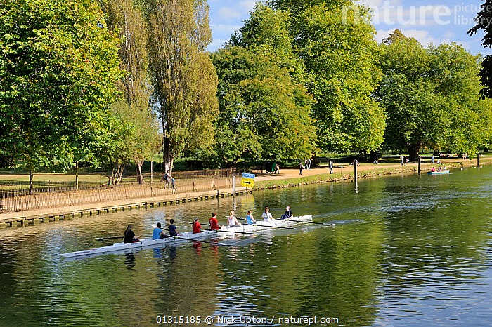

Whether you're a complete beginner or a seasoned rower, joining NCBC is easy and open to all members of New College. No prior experience is needed—just enthusiasm and a willingness to commit to training and racing. All equipment, coaching, and support are provided by the club. To get started, simply sign up during Freshers' Week or contact the captains directly. From there, you’ll be placed in a crew that matches your experience and goal
